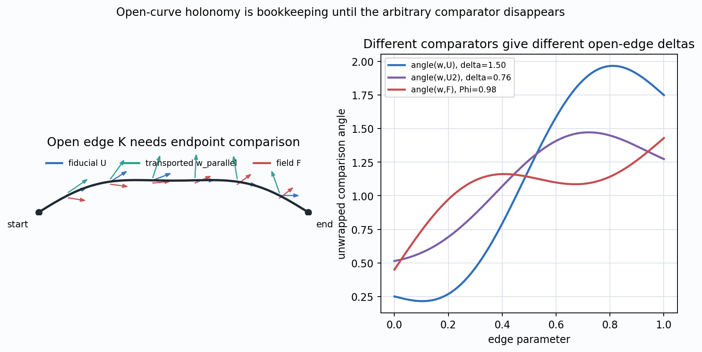
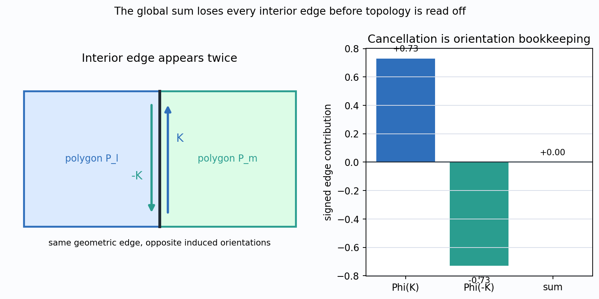
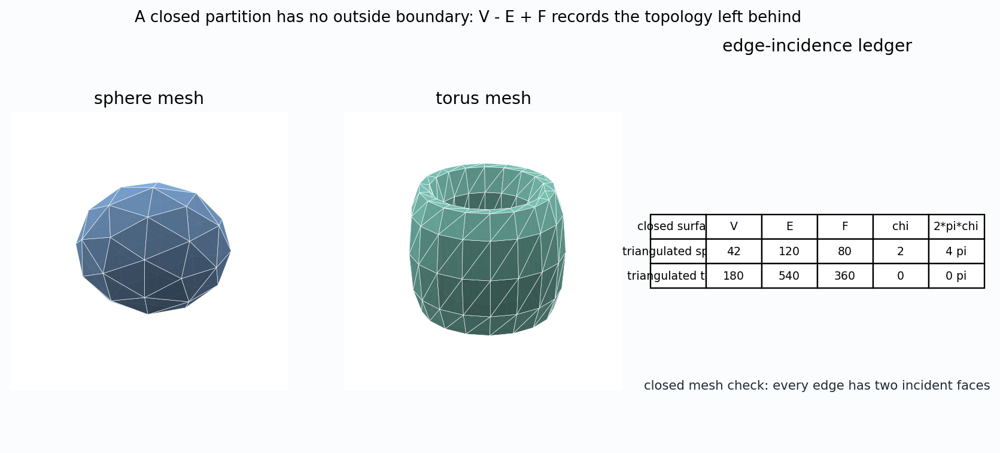
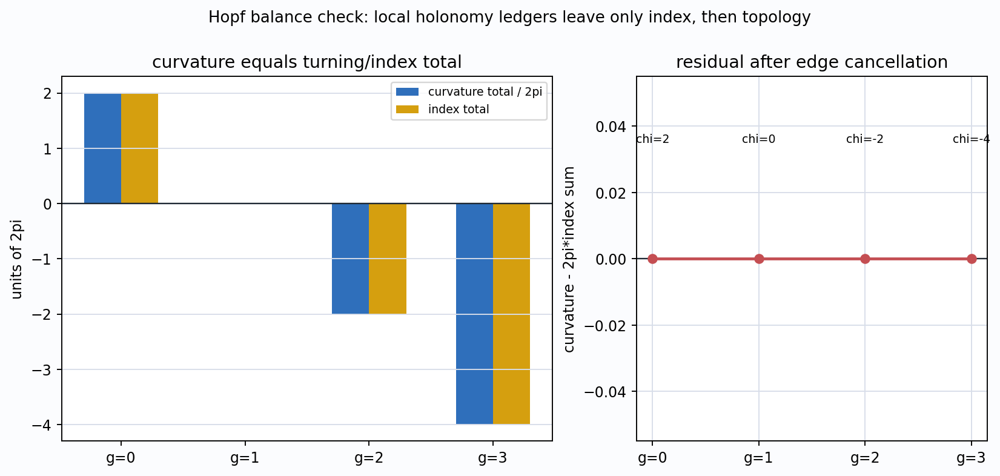
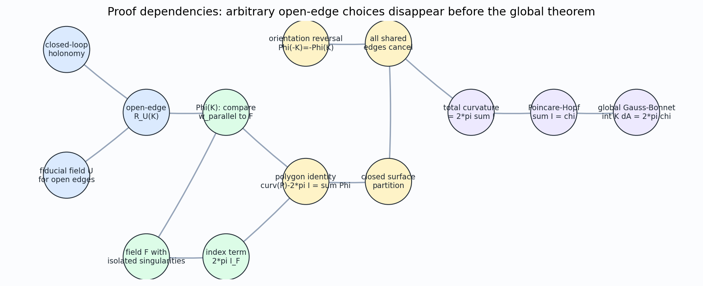

Parallel transport becomes a global curvature theorem after the edge bookkeeping cancels.
$$\int_M K\,dA = 2\pi\,\chi(M)$$
For a closed oriented surface, the total intrinsic curvature is topological.
A vector returns to the same tangent plane, so the rotation angle is directly meaningful.
The endpoints live in different tangent planes. A fiducial field $U$ gives a ruler, but the number depends on that ruler.
$$\Phi(K)=\Delta\angle(w_{\parallel},F)$$
The transported vector is compared with the vector field that also carries the index term.

$F$ gives the direction used in $\Phi(K)$ along the boundary and contributes a signed index if it has a singularity inside the polygon.
$$I_F(P)=\frac{1}{2\pi}\Delta_{\partial P}\arg F$$
Some turning belongs to the field itself. The proof subtracts $2\pi I_F(P)$ so that the remaining boundary ledger measures curvature, not reference-frame winding.
curvature inside $P$ $\quad$ minus $\quad$ field winding $\quad$ equals $\quad$ edge ledger
$$\operatorname{curv}(P)-2\pi I_F(P)=\sum_j \Phi(K_j)$$
The integral of Gaussian curvature over the polygon, corrected by the signed index contribution from $F$.
A sum of endpoint angle changes along boundary edges, each measured against the same reference field $F$.
To globalize, these edge terms must behave like a signed boundary operator: reverse the edge, reverse the sign.
$$\Phi(-K)=-\Phi(K)$$
Neighboring polygons inherit opposite orientations on their shared boundary edge.
Every interior contribution appears in a pair. The proof loses all shared edges before it reads off Euler characteristic.


$$\chi = V-E+F$$
No exterior boundary remains after all interior edges cancel. A surface with boundary would keep an extra boundary term.
The mesh is not approximating curvature here. It exposes the combinatorial condition that makes global cancellation legal.
$$\int_M K\,dA = 2\pi\sum I_F$$
The residual $\int K\,dA - 2\pi\sum I_F$ is zero across valid ledgers for genera $0,1,2,3$.
The theorem counts signed index, not the number of singularities. A source-sink pair on a torus can sum to zero.


If $\Phi(-K)$ is not the negative of $\Phi(K)$, shared edges do not cancel.
A source, sink, and saddle cannot be counted as identical. The index sum is signed.
The closed-surface proof has no remaining exterior boundary. If the surface has boundary, a boundary term survives.
$$\int_M K\,dA = 2\pi\sum I_F = 2\pi\chi(M)$$
Parallel transport, angle comparison in tangent planes, and Gaussian curvature.
The fiducial field $U$ only helps define open-edge bookkeeping; it does not survive the global sum.
Earlier proofs spotlight turning, angular excess, or vector fields. This route makes holonomy do the accounting.
Ask students to identify exactly where the closed-surface assumption enters. The answer is not Poincare-Hopf first; it is the disappearance of every boundary edge in the summed local identity.